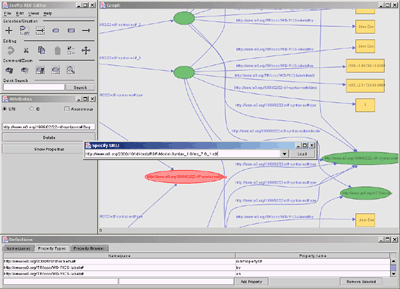

IsAViz: A Visual Authoring Tool for RDF
Latest version: 1.0
Introduction
IsaViz is a visual environment for browsing and authoring RDF models represented as graphs. It features:
- a 2.5D user interface allowing smooth zooming and navigation in the graph
- creation and edition of graphs by drawing ellipses, boxes and arcs
- RDF/XML and N-Triple import
- RDF/XML and N-Triple export, but also SVG and PNG export
Screenshots

More screenshots are available.
Download
Latest version: 1.0
You will also need to download graphviz/dot for your specific platform (version 1.7.6 or later, but version 1.8.1 is strongly recommended).
Finally, as IsaViz is implemented in Java, it requires a JVM (Java Virtual Machine) 1.3.0 or later (1.4.0 or later strongly recommended - see Known problems) since the GUI makes extensive use of Java2D which featured poor performances in JVM 1.2.x. The latest JVM from Sun can be downloaded at http://java.sun.com/j2se/1.4/
Documentation
Installation instructions contain information on how to install and configure IsAViz, including requirements for additional software versions. You should read these as they contain important instructions regarding GraphViz/dot which is not included in the distribution.
A user manual describing all features of IsAViz is also available.
Mailing List
If you want to make comments, bug reports or simply ask a question, use the following mailing list: www-isaviz@w3.org. To subscribe to the list, send an e-mail to www-isaviz-request@w3.org with subscribe in the subject header. See http://www.w3.org/Mail/Request for more details.
Known Problems
- When using a JVM 1.3.x to run IsaViz, it may randomly freeze for no apparent reason. This problem seems to occur especially on slow systems (no matter the OS) and on all UNIX/Linux systems. It is somehow related to the Java2D drawString method when combined with affine transformations (used by the VTM to draw text in the zoomable window). It seems to have been fixed in JVM 1.4.0, so I suggest that people encountering this problem run IsaViz using a JVM 1.4.0 or later (it should completely disappear).
- Due to a bug in GraphViz's SVG output, IsaViz is not able to fully load RDF models containing ampersand characters ('&') in literal values. The bug was reported against GraphViz version 1.7.6 and has been fixed in version 1.8.1 (it is still present in version 1.7.12). The corresponding error message looks like this: The parsing might not be complete (The file is probably not well-formed XML). Some nodes and edges might be missing from the graph because of an error (check error log) in file C:\Temp\isv20013.svg. You can get a more complete error report by reading the error log.
- The VTM uses a mouse cursor different from the system cursor, tightly coupled to VTM views and thus dependant on their refresh rate. It can therefore be difficult to control the mouse when browsing/editing big models. This difficult problem has to be addressed at the VTM level and we are working on ways to further increase the refresh rate.
Acknowledgements
IsaViz was developed by Emmanuel Pietriga in collaboration with Xerox Research Centre Europe and is built upon the Visual Transformation Machine.
It also includes software developed by:
and makes use of the GraphViz library developed by AT&T Research.
Emmanuel Pietriga (W3C, Xerox Research Centre Europe)
Last modified: Wed Mar 06 17:00:49 Romance Standard Time 2002